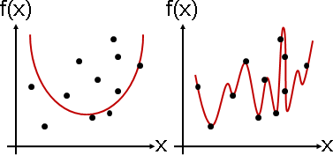

Polynomial Regression
Polynomial Regression
「多項式迴歸」。迴歸函數採用多項式函數。誤差採用平方誤差。

演算法仍是Normal Equation。
例如用函數 f(x) = ax + b
符合數據 (2,3) (5,6) (7,8)
[ 2 1 ] [ a ] [ 3 ]
[ 5 1 ] [ b ] = [ 6 ]
[ 7 1 ] [ 8 ]
例如用函數 f(x) = ax² + bx + c
符合數據 (2,3) (5,6) (7,8)
[ 4 2 1 ] [ a ] [ 3 ]
[ 25 5 1 ] [ b ] = [ 6 ]
[ 49 7 1 ] [ c ] [ 8 ]
例如用函數 f(x,y) = ax² + bxy + cy² + dx + ey + f
符合數據 (2,3,4) (5,6,7) (7,8,9)
[ a ]
[ 2² 2×3 3² 2 3 1 ] [ b ] [ 4 ]
[ 5² 5×6 6² 5 6 1 ] [ c ] = [ 7 ]
[ 7² 7×8 8² 7 8 1 ] [ d ] [ 9 ]
[ e ]
[ f ]
Underfitting / Overfitting
用單純的函數去符合複雜的數據們，顯然符合的不太完美。
用複雜的函數去符合單純的數據們，顯然事情被搞複雜了。
如果我們不清楚數據的性質，也就無法抉擇函數了。那麼，該如何了解數據的性質呢？這屬於統計學的範疇，就此打住。